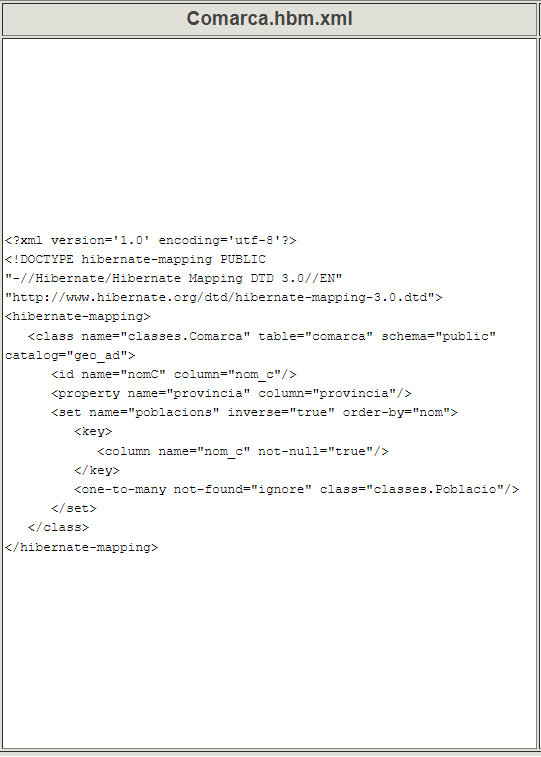
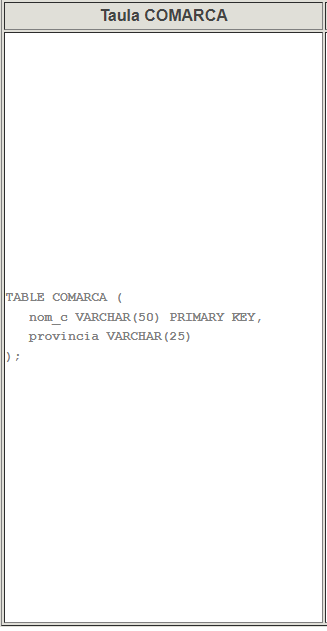
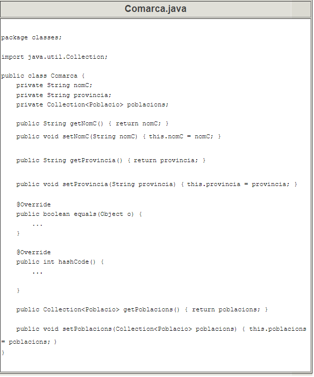

7 - Estructura dels fitxers de mapatge
En la pregunta 5.1 havíem vist les classes generades per Hibernate. Anem a veure-ho ara amb més detall, mirant totes les classes i fitxers generades en el procés de mapatge i com s'interrelacionen entre elles.
Els fitxers que serveixen de mapatge, Hibernate els genera de tipus XML , i seran:
- hibernate.cfg.xml , ja comentat anteriorment i que estableix les condicions bàsiques de la connexió amb la Base de Dades (Driver, URL, usuari, contrasenya, ...).
- Un fitxer .hbm.xml per cada taula (i classe). Així en el nostre exemple tindrem Comarques.hbm.xml , Poblacions.hbm.xml i Instituts.hbm.xml i són els encarregats de dir la correspondència entre els camps de la taula (p.e. COMARCA) i les propietats de l'objecte (p.e. Comarca.java).
La següent imatge explica aquesta manera d'enllaçar. Les nostre classes són classes Kotlin, però totalment equivalents a les classes Java, per això es deixa aquest nom en la imatge:

El fitxer hibernate.cfg.xml
El fitxer hibernate.cfg.xml estableix les condicions de la connexió. Depenent de la versió, pot estar lleugerament diferent:
<?xml version='1.0' encoding='utf-8'?>
<!DOCTYPE hibernate-configuration PUBLIC
"-//Hibernate/Hibernate Configuration DTD//EN"
"http://www.hibernate.org/dtd/hibernate-configuration-3.0.dtd">
<hibernate-configuration>
<session-factory>
<property name="connection.url">jdbc:postgresql://89.36.214.106:5432/geo_ad</property>
<property name="connection.driver_class">org.postgresql.Driver</property>
<property name="connection.username">geo_ad</property>
<property name="connection.password">geo_ad</property>
<property name="hibernate.dialect">org.hibernate.dialect.PostgreSQL93Dialect</property>
<mapping resource="Comarca.hbm.xml"/>
<mapping resource="Institut.hbm.xml"/>
<mapping resource="Poblacio.hbm.xml"/>
</session-factory>
</hibernate-configuration>
Podem observar com s'especifica el driver JDBC, la URL, l'usuari que es connecta, la contrasenya i el dialecte (per a poder comunicar-se bé en versions anteriors). També ha registrat els fitxers de mapatge.
Els fitxers .hbm.xml
Els fitxers .hbm.xml estableixen la correspondència entre taula i classe, i dins d'elles entre camps de la taula i propietats de la classe. Mirem el contingut de Comarques.hbm.xml. Posem a un costat l'estructura de la taula, i a l'altre l'estructura de l'objecte:
|  |  |
|---|---|
|  |
Comentem un poc les coses:
- < hibernate-mapping> és l'element arrel; tot el mapatge està contingut dins d'ell.
- < class> Equival a tota la classe per una banda i tota la taula per una altra. Dins d'aquest element estaran totes les correspondències de camps i propietats.
- L'atributname conté el nom de la classe.
- L'atribut table conté el nom de la taula corresponent.
- Pot haver algun altre atribut, indicant el catàleg (depén del SGBD)
- < id> especifica el camp que és clau principal. És diferent als camps normals.
- L'atribut name indica el nom de la propietat
- L'atribut **column indica el camp de la taula
-
< property> especifica un camp normal, que no és clau principal. Només s'ha d'especificar:
- L'atribut name indica el nom de la propietat
- L'atribut column indica el camp de la taula
I ens deixem per al final la manera d'enllaçar la clau externa. Recordem que la clau externa està definida en POBLACIO i que apunta a COMARCA. En el mapatge de Comarca tindrem una línia nova que és la que indica que la propietat poblacions ha de contenir les poblacions de la comarca. És per tant un conjunt (Collection) de moltes poblacions. Les coses més importants són les següents:
- < set> que indica que serà un conjunt
- L'atribut name serà el nom de la propietat
- L'element key especifica la clau externa, amb l'element column i atribut name , en aquest cas nom_c.
- L'element one-to-many indica que un departament pot tenir molts empleats (per això era un conjunt), i especifica de quina classe són amb l'atribut class
En el cas de les poblacions, taula POBLACIO i classe Poblacio , les coses seran molt similars. La diferència més significativa és la manera de representar la clau externa. Ara serà una relació many-to-one , indicant que la població pot estar en una única comarca, és a dir farà referència a un únic objecte Comarca.
<many-to-one name="comarca" class="classes.Comarca">
<column name="nom_c" not-null="true"/>
</many-to-one>
-
< many-to-one> en la propietat que fa referència a l'altra classe
- L'atribut name indica el nom de la propietat.
- L'atribut class indica la classe a què fa referència, en aquest cas Comarca.
- L'element column és un element buit amb la propietat name , que contindrà el camp de la taula
En resum, dins de l'element class que equival a la classe (i la taula), tindrem els elements:
- id per a la clau principal
- property per als camps normals
- set per als que són apuntats per una clau externa, indicant el conjunt.
- many-to-one per als que són clau externa****
7.1 - Anotacions en compte de fitxers xml de mpatge
Ja vam comentar en la pregunta 3 que hi havia 2 tècniques per a fer el mapatge:
- Per mig de fitxers xml , que són els que hem vist
- Per mig d'anotacions
Les anotacions es fan en el mateix fitxer on està definida la classe que ens ha resultat (Comarca.java, Poblacio.java i Institut.java), però per a que Java no ho intente interpretar, en fan amb un símbol inicial i així distingir les anotacions de les línies normals de la classe.
Aquest caràcter especial pel qual comencen les anotacions sol ser @
Aquest seria el resultat de la classe amb anotacions, si haguérem optat per aquesta tècnica.
Es mostra només a nivell il·lustratiu. Vosaltres no ho tindreu en el vostre projecte
package classes;
import javax.persistence.*;
import java.util.Collection;
@Entity
public class Comarca {
private String nomC;
private String provincia;
private Collection<Poblacio> poblacions;
@Id
@Column(name = "nom_c")
public String getNomC() {
return nomC;
}
public void setNomC(String nomC) {
this.nomC = nomC;
}
@Basic
@Column(name = "provincia")
public String getProvincia() {
return provincia;
}
public void setProvincia(String provincia) {
this.provincia = provincia;
}
@Override
public boolean equals(Object o) {
...
}
@Override
public int hashCode() {
...
}
@OneToMany(mappedBy = "comarca")
public Collection<Poblacio> getPoblacions() {
return poblacions;
}
public void setPoblacions(Collection<Poblacio> poblacions) {
this.poblacions = poblacions;
}
}
Observeu com tenim les mateixes coses que en els fitxers de mapatge, però representat de forma lleugerament diferent
Llicenciat sota la Llicència Creative Commons Reconeixement NoComercial CompartirIgual 2.5